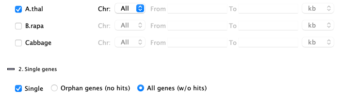
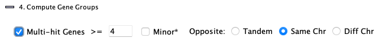

|
|
SyMAP Queries |

|
|
|
|||
See Release for the latest v5.6.1 changes.
See Terminology in the User Guide,
especially the
> Instructions
To open the query interface, first select two or more sequence projects in the Project Manager. Then select the
The
The
Open the
> Query Setup | Go to top |
Set up the desired filters and then select

Rules | Go to top |
|
1. All queries are on the 2. All | 
|
|
3. All 4.
5. Most filters can be used in conjunction with other filters; options will be disabled if they cannot be used with a selected filter. |

|
1. General | Go to top |
Enter a substring: the entire annotation string (i.e. column |

|
| Select a specific chromosome for the species. | ||
| The | ||
| The |
It is valid to enter only the
The
2. Single genes | Go to top |
| The |

|
Orphan genes (no hits)
Genes that do not a have a hit and meet the additional filters. The orphan genes are relative to the projects shown on theInstruction page. For example, if species X, Y and Z have synteny computed between all pairs, but only X and Y are selected, the orphan genes for X would be those with no hits to Y. If X,Y&Z are selected, the orphan genes for X would be those with no hits to Y and Z.
All genes (w/o hits) , i.e. genes with and without hits
This shows all genes that meet the additional filters, regardless if they have a hit or not. There is always the same set of genes for a project, regardless of synteny.
Unselect species
| When the |  |
3. Pair hits | Go to top |
|
Each hit connects two species (projects) and hence represents a pair of aligned
regions for two of the selected species.
Filters are as follows: |

|
| Yes | Only hits that are part of a synteny
block will be returned. All hits will have a value for the | ||
| No | Only hits that are NOT part of a synteny
block will be returned. No hits will have a value for the |
| Every | Only hits that align to a gene on one or both sides of the hit will be shown.
The | ||
| Every* | This is like the | ||
| One | Only hits that align to a gene on ONE end will be shown.
The | ||
| Both | Only hits that align to genes on BOTH ends will be shown.
The | ||
| None | Only hits that do NOT align to a gene
on either end will be shown. The |
| >= [=, >=] N | List all hits in collinear sets that have size >= N or = N or <= N, respectively.
The text box must have an integer >0; | ||
| Ignore | Do not filter on collinear set sizes. |
| Go to top |
For the following 4 filters, do not include the 'Chr' number. Instead use the chromosome pull-downs
to narrow the search to a specific chromosome, as exampled in
Enter a single block number (the
This will display all hits with this block number from any chromosome pair.
Use it in conjunction with the chromosome pull-downs, for example,
if you select Chr 1 from the first project, Chr 2 from a second project, and enter block=3, you will see
hits in block 1.2.3.
Enter a set number (the
This will display all hits with this set number from any chromosome pair.
This will display all hits with this number from any chromosome pair, e.g. there will be a Hit#1 for every chromosome pair that
has hits. Both major and minor gene hits will be shown.
Enter a
• If only a number is entered, all genes with the numeric prefix will be displayed (including minor hits).
• If a number.suffix is entered, the exact gene will be displayed, including minor hits.
Additional rules:
• A gene will only show if it has a hit.
• When this box is checked, the species checkboxes will be activated; see Unselect species.
This allows searching for a single gene on a specific species/chromosome.
• When the same gene hits multiple places on the same opposite chromosome, they are put in a group,
which can be viewed with the
4. Gene Groups | Go to top |
4.1 Multi-hit Genes>= N

List all hits genes that have >= N hits, where multiple hits can join the same two genes.
The target gene refers to the gene with >= N hits to the opposite species.
The options are as follows:
| Include minor hits on either chromosome. | |||
|
| (Annotated species only): The >=N hits must be to a tandem array of genes.
| ||
|
| The >=N hits must all be on the same opposite chromosome. | ||
|
| The >=N hits may be on any set of opposite chromosomes. | ||
| Go to top |
|
Table can list the same hit multiple times, because gene X and gene Y may be connected by a hit, where both gene X
and gene Y have >=N, so both groups need to be shown.
An example is shown on the right, where Hit#881 is in both Grp#3 for Atha and Grp#15 for Brap.
The image below shows the two groups, where the group hits are highlighted in magenta; these were
produced using the |

|

4.2
| Go to top |
| Using the hits that pass the other filters, SyMAP constructs putative gene families (PgeneFs) spanning the selected species. This is done by grouping hits which overlap on at least one genome. |

|
| Additional options are provided when >2 species are selected. Note, if you have more than 6 species selected, this stage can take an hour or more. |

|
Each PgeneF is given a number, which is shown in the Query Results table (column name
Filters using the PgeneF values:
These filters permit searching for gene families shared by one group of species but not
present in another.
If a species is checked to include, then the PgeneF will only be retained if it includes at least one hit which hits that species.
For >2 species only: If a species is checked to exclude, then the PgeneF will be discarded if any of its hits are to that species.
| Find PgeneFs which are not yet annotated. A PgeneF will be discarded if it is annotated on any of
the species which are checked in the | |
| For >2 species only: Require the PgeneF to be fully linked, i.e. for each pair of species A and B in the group, there must be a hit linking A to B. | |
| For >2 species only: Only PgeneF hits will be shown if they have hits to the included species, although the PgeneF numbers will reflect groupings created using all hits. |
Query Result Panel | Go to top |
1. Results Table
A pair hits table
Pair Hits :- The table contains columns for all of the selected species, but each hit only connects two species, and the other species columns are empty.
- Each
Hit# is only listed once unless minor genes are included (see Rules). - A gene may be listed more than once if it has multiple major hits.
Single genes :- If the query specified
Single genes, then each row represents one gene and shows data only for one species.
- If the query specified
You can sort the columns by clicking the column name in the table, and rearrange them by dragging the
column name. You can add/remove columns using the
2. Columns | Go to top |
| The buttons on the bottom will be | 
|
| Clears the selection of all columns except | |
| Selects the default columns, which are shown in the image above. | |
| Arranges similar columns, putting the gene columns first. |
In the column panel shown above, hover over a column name to see its brief description. Following are the full descriptions of the columns.
2.1 Pair hits columns | Go to top |
| Row number within the table | ||
| Synteny block containing this hit (if any). The format is Chr.Chr.Block#, where the two "Chr" are chromosome numbers. | ||
| The number of hits which comprise the synteny block. | ||
| Collinear set containing this hit (if any). The format is Chr.Chr.Size.Set# (e.g. 1.2.5.100; there are 5 adjacent gene hits in set# 100 on Chr1 to Chr2). | ||
| The hit number, which are sequential numbers for the chromosome pair.
This number is shown on the | ||
| Percent identity of the alignment. The value of the "Identity" column is from the MUMmer file. If the hit has subhits, then this is an approximation. | ||
| Percent similarity of the alignment (as determined by the BLOSUM scoring matrix). The value of the "Similarity" column is from the MUMmer file. If the hit has subhits, then this is an approximation. | ||
| The number of subhits in a clustered hit. | ||
| If "=", both hit ends are to the same strand; if "!=", they are to different strands. | ||
| The summed subhits within a clustered hit taking into accounts overlaps. The summed subhits are usually different for the two sides; this will be the longest. | ||
| There are two alternative algorithms for clustering the hits on database creation.
| ||
|
| ||
| Chromosome of the hit. | ||
| Start and end of the annotated gene. The | ||
| The gene number is C.#.{a-z}. The C is the chromosome number. The # is the sequential number along the chromosome. If a run of genes overlap, they receive the same gene number with different suffixes {a-z, a2-z2, etc}. | ||
| Start and end of the hit region. | ||
| Hend-Hstart+1 | ||
| The value depends on which | ||
| The keywords for the annotations of each species are listed;
they can be different for each species.
See GFF Attributes
for modifying the keywords shown. The | ||
2.2. Single genes columns | Go to top |
| This is the number of hits to the gene in the ENTIRE databases, except for SELF synteny. |
→ if Arab, Brap and Cabb species have all been compared for synteny,
→ and only Arab-Brap or Arab-Cabb are being queried, they will have some rows with
→ and the Arab-Brap-Cabb query will have all
This is illustrated below, where gene# 1.2 is the first table because it does NOT have a hit to Cabb, but it has
Arab-Cabb orphans

| Arab-Brap orphans

| Arab-Brap-Cabb orphans
|
The other query on singles is for
2.3 Columns and order shown | Go to top |
The selected columns are saved between sessions (described below), but the order is not.
2.4 Auto-save columns
The columns selection is saved in a file called .symap_saved_props in the user's home directory so that the next time youIf you have multiple SyMAP databases, when you change between them the columns displayed are relative to the last SyMAP database queried (they may seem some what random to a different SyMAP database).
3. Top buttons | Go to top |

The
Show | Go to top |
Align | Go to top |
| Select one or more rows. The sequences of the selected hit(s) are written out and a multiple alignment is created using MUSCLE (Edgar 2004 NAR:32). The figure on the right shows the MUSCLE alignment of four genes: 2 from B.rapa and 1 from Cabbage and A.thal. | 
|
View 2D | Go to top |

This displays the
| Option | Column* | Selected Hit | Highlight** | Display Filter |
(kb) | N/A | The hit is padded to each side by the amount indicated (default 30kb). | Default | |
block | The entire block for the selected hit will be shown. | Default | ||
set | The entire collinear set of hits for the selected hit will be shown. | Highlight 2 | ||
| The entire group of hits for the selected hit will be shown. | Popup-query |
**See Color Icon.
If the
| Example: | Go to top |
|
The image on the right shows a Collinear set of 5.
After the initial display, the
The image below shows results when the
| 
|

{kind=link}
{kind=link}
{kind=link}
{kind=link}
{kind=link}
Export... | Go to top |
|
|

|
Report... | Go to top |
If the table was generated using the
Collinear Report: Collinear sets are grouped to show overlapping sets.

| 
|
| The top of the HTML report of the Arab collinear sets is shown on the upper right. As shown, Arab-Brap have collinear set #9 with exactly 6 genes, and Arab-Cabb have collinear set #7 with 6 genes. | |
| Uncheck | |
Gene Report: The report lists all genes from the reference species, and what genes each aligns to
for the other species. Only genes listed in the query table will be shown in this report..

| 
|
4. Statistics | Go to top |

Most of the statistics are self-explanatory except the following:
> Results | Go to top |

All query results are listed under the
The only way to remove query results from the left tab is by selecting them in this table followed by
Auxiliary topic: Multi-species | Go to top |
|
The best way is to view the Report results, for example, on the right is an entry
for collinear sets with >= 6 genes.
Bring up the It is necessary to "drag the left button and release" over each of the tracks to reduce the view to the 6 genes on each. This results in a view as shown below. |
|

| Go to top |